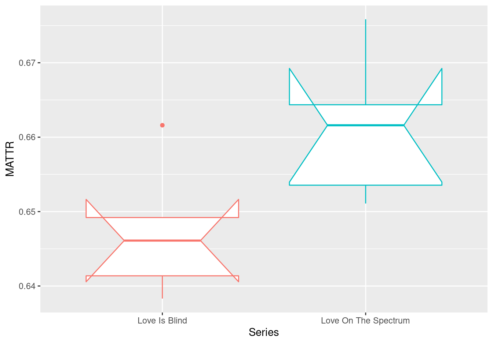

Analyze dataset
2021-12-02
About
Description
The purpose of this script is to compare the two datasets, Love is Blind and Love on the Spectrum and find the differences between the two datasets and thus, the two groups of individuals (those on the Autism spectrum and those who are not). It is important to note that
We will start by doing a keyness contrast analysis by finding the relative frequency of words, then we will do a weighted frequency to determine how frequent a particular word is relative to the entire dialogue from the season. Next, we will look to determine whether or not there is lexical diversity between the two groups. Then, we will do a type-token analysis. Finally we will do topic modeling to show differences amongst different types of people and then the last step we plan to do is a sentiment analysis in order to find if there are different emotions that are expressed in the two different seasons.
It is important to note that though the two shows are about navigating the dating world, we do know that Love on the Spectrum and Love is Blind have different motives. Love on the Spectrum is more about following individuals around as they navigate looking and falling in love, whereas Love is Blind is more of a show based on competition and may be more scripted and less natural.
Usage
Setup
# Script-specific options or packages
library(tidyverse) # data manipulation
library(patchwork) # organize plots
library(janitor) # cross tabulations
library(tidytext) # text operations
library(quanteda) # tokenization and document-frequency matrices
library(quanteda.textstats) # descriptive text statistics
library(quanteda.textmodels) # topic modeling
library(quanteda.textplots) # plotting quanteda objectsRun
love_is_blind_curated <- read_csv(file = "../data/derived/love_is_blind/love_is_blind_curated.csv") ## Rows: 5 Columns: 4## ── Column specification ──────────────────────────────────────
## Delimiter: ","
## chr (4): Series, Season, Episode, Dialogue##
## ℹ Use `spec()` to retrieve the full column specification for this data.
## ℹ Specify the column types or set `show_col_types = FALSE` to quiet this message.love_on_the_spectrum_curated <- read_csv(file = "../data/derived/love_on_the_spectrum/love_on_the_spectrum_curated.csv")## Rows: 5 Columns: 4## ── Column specification ──────────────────────────────────────
## Delimiter: ","
## chr (4): Series, Season, Episode, Dialogue##
## ℹ Use `spec()` to retrieve the full column specification for this data.
## ℹ Specify the column types or set `show_col_types = FALSE` to quiet this message.glimpse(love_is_blind_curated) # preview dataset ## Rows: 5
## Columns: 4
## $ Series <chr> "Love Is Blind", "Love Is Blind", "Love Is …
## $ Season <chr> "01", "01", "01", "01", "01"
## $ Episode <chr> "01", "02", "03", "06", "10"
## $ Dialogue <chr> "When I heard about this experiment, I knew…glimpse(love_on_the_spectrum_curated) # preview dataset## Rows: 5
## Columns: 4
## $ Series <chr> "Love On The Spectrum", "Love On The Spectr…
## $ Season <chr> "01", "01", "01", "01", "01"
## $ Episode <chr> "01", "02", "03", "04", "05"
## $ Dialogue <chr> "What do you think love is? It'll be like a…The two datasets in question, love_on_the_spectrum_curated and love_is_blind_curated show us the variables that we have created and transformed to better organize our datasets. Both datasets contain four variables: Series, Season, Episode, and Dialogue.
Let’s take a look at the data dictionary to make sure we understand what each variable signifies (our variables are very straight forward, but I recommend this step regardless to make sure you know what each variable represents).
read_csv(file = "../data/derived/love_on_the_spectrum/love_on_the_spectrum_curated_data_dictionary.csv") # read data dictionary## Rows: 4 Columns: 3## ── Column specification ──────────────────────────────────────
## Delimiter: ","
## chr (3): variable_name, variable, description##
## ℹ Use `spec()` to retrieve the full column specification for this data.
## ℹ Specify the column types or set `show_col_types = FALSE` to quiet this message.read_csv(file = "../data/derived/love_is_blind/love_is_blind_curated_data_dictionary.csv")## Rows: 4 Columns: 3## ── Column specification ──────────────────────────────────────
## Delimiter: ","
## chr (3): variable_name, name, description##
## ℹ Use `spec()` to retrieve the full column specification for this data.
## ℹ Specify the column types or set `show_col_types = FALSE` to quiet this message.Word Frequency Analysis
lots_corpus <-
love_on_the_spectrum_curated %>% # data frame
corpus(text_field = "Dialogue")
lots_corpus %>%
summary(n = 5) # previewlib_corpus <-
love_is_blind_curated %>%
corpus(text_field = "Dialogue") # create corpus
lib_corpus %>%
summary(n = 5) # previewThese code chunks allow us to see the type-tokens for each episode in the season under investigation for both Love on the Spectrum and Love is Blind.
lots_tokens <-
lots_corpus %>% # corpus object
tokens(what = "word", # tokenize by word
remove_punct = TRUE) %>% # remove punctuation
tokens_tolower() # lowercase tokens
lib_tokens <-
lib_corpus %>% # corpus object
tokens(what = "word", # tokenize by word
remove_punct = TRUE) %>% # remove punctuation
tokens_tolower() # lowercase tokens
lots_tokens %>%
head(n = 1) # preview one tokenized documents.## Tokens consisting of 1 document and 3 docvars.
## text1 :
## [1] "what" "do" "you" "think" "love" "is" "it'll"
## [8] "be" "like" "a" "fairy" "tale"
## [ ... and 5,953 more ]lib_tokens %>%
head(n = 1) # preview one tokenized ## Tokens consisting of 1 document and 3 docvars.
## text1 :
## [1] "when" "i" "heard" "about"
## [5] "this" "experiment" "i" "knew"
## [9] "it" "was" "for" "me"
## [ ... and 8,412 more ]Very early, we are able to see the differences among the two datasets. For Love is Blind, we see there are approximately 8,400 tokens whereas in Love on the Spectrum has approximately 5,900 tokens.
lots_dfm <-
lots_tokens %>%
dfm() # create dfm
lib_dfm <-
lib_tokens %>%
dfm() # create dfm
lots_dfm %>% # data frequency model for love on the spectrum
head(n = 5) # preview 5 documents## Document-feature matrix of: 5 documents, 2,644 features (61.58% sparse) and 3 docvars.
## features
## docs what do you think love is it'll be like a
## text1 47 63 206 27 27 48 2 55 70 173
## text2 63 57 260 31 19 60 3 34 69 108
## text3 69 74 233 42 19 50 2 37 93 147
## text4 21 37 174 27 21 45 3 29 55 121
## text5 41 68 189 31 10 27 0 20 72 113
## [ reached max_nfeat ... 2,634 more features ]lib_dfm %>% # data frequency model for love is blind
head(n = 5) # preview 5 documents## Document-feature matrix of: 5 documents, 2,751 features (58.02% sparse) and 3 docvars.
## features
## docs when i heard about this experiment knew it was for
## text1 23 434 3 41 61 9 5 73 51 62
## text2 22 455 0 37 70 0 1 80 59 61
## text3 10 342 2 22 72 3 5 68 31 42
## text4 18 414 0 47 88 5 5 110 49 60
## text5 16 468 1 28 96 9 5 104 55 90
## [ reached max_nfeat ... 2,741 more features ]These data frequency models for both Love on the Spectrum and Love is Blind show the first 10 words of their transcripts and their frequency in each of the 5 episodes analyzed from each season. We notice that there are a similar number of features in both datasets (2,644 to 2,751). There is a 61.58% sparcity, which indicates that that there are a number of zeros throughout the dataset for the features. There is a similar sparcity for Love is Blind, 58.02%.
We are now going to look at the top 25 words from each of the datasets and compare them to see the similarities and differences.
lots_dfm %>%
textstat_frequency() %>%
slice_head(n = 10)We see for the Love on the Spectrum dataset, the most frequent word used is you, followed by I. Something interesting is that words like ‘yeah’ and ‘like,’ words that to me appear like filler words, are in this top 10 list.
We will do the same for the Love is Blind dataset.
lib_dfm %>%
textstat_frequency() %>%
slice_head(n = 10)We see that for the Love is Blind data, the two most common words are swapped, but still ‘i’ and ‘you.’ There don’t appear to be any filler words like ‘like’ and ‘yeah’ in this dataset (at least not in the top 10).
We are now going to use these data frames to plot the frequencies of the terms in descending order for borth datasets (the top 25 words).
lots_dfm %>%
textstat_frequency() %>%
slice_head(n = 25) %>%
ggplot(aes(x = reorder(feature, frequency), y = frequency)) + geom_col() + coord_flip() + labs(x = "Words", y = "Raw Frequency", title = "Top 25 for Love on the Spectrum")lib_dfm %>%
textstat_frequency() %>%
slice_head(n = 25) %>%
ggplot(aes(x = reorder(feature, frequency), y = frequency)) + geom_col() + coord_flip() + labs(x = "Words", y = "Raw Frequency", title = "Top 25 for Love is Blind")
The raw frequency of each word in each dataset is affected by the total number of words in each series dataset. In order to make a term-series comparison, we will now use the dfm_weight() function which will determine the Term (weighted) frequency of the words by determining how frequent a term in an episode is to the rest of the episode.
lots_dfm %>% # dfm
dfm_weight(scheme = "prop") %>% # weigh by term frequency
textstat_frequency() %>%
group_by(group) %>% #grouping parameters
slice_max(frequency, n = 15) %>% # extract top features
ungroup() %>% # remove grouping parameters
ggplot(aes(x = frequency, y = reorder_within(feature, frequency, group), fill = group)) +
geom_col (show.legend = FALSE) + # barplot
scale_y_reordered() + # clean up y-axis labels (features)
labs(x = "Term Frequency", y = NULL) # labels
lib_dfm %>% # dfm
dfm_weight(scheme = "prop") %>% # weigh by term frequency
textstat_frequency() %>%
group_by(group) %>% #grouping parameters
slice_max(frequency, n = 15) %>% # extract top features
ungroup() %>% # remove grouping parameters
ggplot(aes(x = frequency, y = reorder_within(feature, frequency, group), fill = group)) +
geom_col (show.legend = FALSE) + # barplot
scale_y_reordered() + # clean up y-axis labels (features)
labs(x = "Term Frequency", y = NULL) # labels
We see the use of the word ‘I’ surpasses all of the other words a lot. The individuals use ‘I’ in Love is Blind more than the individuals use ‘You’ on Love on the Spectrum.
The issue we now have is that the words in each of these term frequency matrices is that the top 15 words appear to be terms that are the bread and butter across language– they are extremely common. In order to find the words that distinguish (if they do) one series from another, we must apply the Term Frequency-Inverse Document Frequency to put the most common words at the bottom of the chart because they are most frequent across all the documents, and put the next set of words that aren’t as common as the most frequent.
lots_dfm %>%
dfm_trim(min_docfreq = 2) %>% # keep terms appearing in 2 or more episodes
dfm_tfidf(scheme_tf = "prop", ) %>% # weigh by tf-idf
textstat_frequency(force = TRUE) %>% # get frequency statistics
group_by(group) %>% #grouping parameters
slice_max(frequency, n = 15) %>% # extract top features
ungroup() %>% # remove grouping parameters
ggplot(aes(x = frequency, y = reorder_within(feature, frequency, group), fill = group)) +
geom_col (show.legend = FALSE) + # barplot
scale_y_reordered() + # clean up y-axis labels (features)
labs(x = "Term Frequency", y = NULL) # labels
After minimizing the effect of common words, we are now able to see the “meat” of the data and which words are used most frequently across the episodes analyzed for Love on the Spectrum. We see there are a lot of names that appear now (Kelvin, Michael, Maddi, Andrew, Evie, Olivia). We see no words relating to romantic relationships.
lib_dfm %>%
dfm_trim(min_docfreq = 2) %>% # keep terms appearing in 2 or more episodes
dfm_tfidf(scheme_tf = "prop") %>% # weigh by tf-idf
textstat_frequency(force = TRUE) %>%
group_by(group) %>% #grouping parameters
slice_max(frequency, n = 15) %>% # extract top features
ungroup() %>% # remove grouping parameters
ggplot(aes(x = frequency, y = reorder_within(feature, frequency, group), fill = group)) +
geom_col (show.legend = FALSE) + # barplot
scale_y_reordered() + # clean up y-axis labels (features)
labs(x = "Term Frequency", y = NULL) # labels
We see that for the Love is Blind dialogue, after making sure the words appeared in more than one episode, we see more words relating to marriage (date, wedded, diamond). It is interesting to note that house (something so basic and simple to us) is the most frequent word. Could this be indicative of something?
Relative Frequency (Keyness) Measures
The purpose of exploring the relative frequencies of the terms in both TV Series is to compare these terms to one another. One group becomes the target group and the other becomes the reference group. The results will show us which terms occur significantly more often in the target group than they do in the reference group.
# make datasets in the same corpuslots_keywords <-
lots_dfm %>% # dfm
dfm_trim(min_docfreq = 2) %>% # keep terms appearing in 2 or more episodes
textstat_keyness() # compare to Love Is Blind*** Got an error here saying that the target is not correct… not sure how I would make the LIB data frequency model my reference group and LOTS data frequency model as my target in order to compare term frequencies.
Topic Modeling
library(seededlda) # for the Latent Dirichlet Allocation Algorithmlots_lda <- textmodel_lda(lots_dfm, k = 5)
terms(lots_lda, 10) # top 10 terms for each topic## topic1 topic2 topic3 topic4 topic5
## [1,] "no" "yep" "good" "you" "michael"
## [2,] "those" "socks" "right" "i" "she's"
## [3,] "ah" "navy" "what" "to" "but"
## [4,] "sounds" "two" "hey" "a" "lot"
## [5,] "andrew" "but" "great" "the" "school"
## [6,] "why" "let's" "kelvin" "and" "excuse"
## [7,] "favorite" "thinking" "mark" "yeah" "talk"
## [8,] "moment" "live" "day" "that" "common"
## [9,] "excited" "ooh" "maddi" "like" "relationship"
## [10,] "soon" "some" "tonight" "it" "autistic"There don’t seem to any clear topics among the group of words expect in topic 3 where we seem to be getting all of our very basic and common filler words like I, a, to, the, and, etc.
lib_lda <- textmodel_lda(lib_dfm, k = 5)# k set to 5 topics
terms(lib_lda, 10) # top 10 terms for each topic## topic1 topic2 topic3 topic4 topic5
## [1,] "from" "love" "mom" "i" "shit"
## [2,] "name" "the" "home" "you" "night"
## [3,] "they" "today" "back" "to" "can't"
## [4,] "who" "♪" "we're" "and" "amber"
## [5,] "date" "blind" "weeks" "the" "yeah"
## [6,] "see" "thank" "house" "that" "put"
## [7,] "hello" "live" "like" "like" "days"
## [8,] "voice" "husband" "put" "i'm" "mm"
## [9,] "find" "cameron" "close" "a" "past"
## [10,] "came" "um" "three" "my" "after"For the Love is Blind dialogue, we see more clear topics. For example, topic 1 contains words that have negative connotations like past, shit, fuck, fucking (curse words). Topic 3 is very similar to topic 3 in our Love on the Spectrum dialogue, which are common and basic words that we see in language everyday. Topic 2 is the most interesting to me because it reminds me of Home (mom, home, house, laundry, birthday). There don’t appear to be any topics focusing on topics regarding love or romantic relationships.
Sentiment Modeling
*** Need help on what this is supposed to look like (what code is supposed to go here)
Finalize
Log
The analysis of the transcripts from Love on the Spectrum and Love is Blind was to provide us with insight on if differences in language occur, especially surrounding the topic of love. Previous research has shown that individuals with Autism Spectrum Disorder often have a difficult time in maintaining relationships, especially romantic ones (Strunz et al. 2017).
Our purpose is to investigate whether or not we see differences in word frequency (due to a common characteristic of autism being echolalia, the repetition of the speech of others) (Sterponi and Shankey 2014). Due to this common characteristic, we were hoping to find patterns in the Love on the Spectrum data to validate this hypothesis, however it does not appear that words indicative of repetition (questioning why if someone asks why, etc.) occur in this data.
We also wished to investigate which words were more common in each dataset. We found that word names seemed to appear most often when controlling for common words expressed in everyday language use and for Love is Blind, we found words indicative of relationships and romance. Next, we looked at sentiments and topics surrounding each of the TV Series and we didn’t find anything indicative that romance was more of a topic in Love is Blind than in Love on the Spectrum. Instead, the only theme that seemed to appear in the Love on the Spectrum topics were the use of common words. We also see that their word choice across topics is very basic, which is also a characteristic of autism; their word choice compared to typically-developed adults is simpler. For the Love is Blind topics, we found the common words topic like we did in Love on the Spectrum, but we also saw the topic of home, which either shows that individuals talked about their lives growing up, or talked about their lives together. Again, however, we did not find that romance was a topic that was more discussed in Love is Blind than in Love on the Spectrum.
We did further investigation on whether or not we see echolalia in individuals on the spectrum by focusing on the Type-Token Ratio.
Finally, we wanted to investigate whether or not individuals on the spectrum had a smaller vocabulary than those not on the spectrum, and their use of very common words like you, I, yeah, like, etc.
*** for some reason, my citations will not show up when I put the @ symbol. Went in to make sure zotero key was there, it was. Cleared out and re-entered, reapplied, and hit ok. Still did not work.